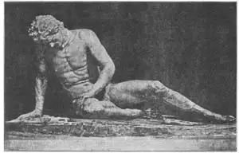
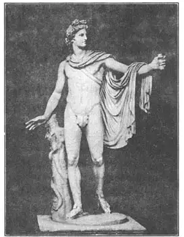
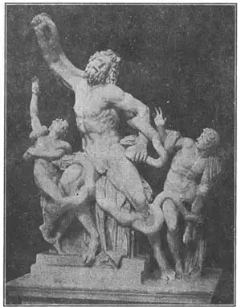
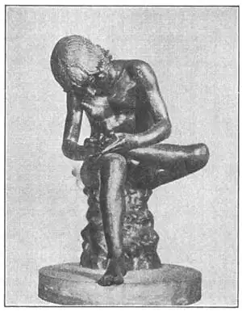

39
PLASTER CASTS
石膏摹制品

WHEN I was a boy I used to be taken to a museum which had copies of all the great Greek sculptures, made out of plaster—plaster casts, they are called. The statues that I liked best of all, I learned afterward, were not considered so good as those I’ve told you about in the last chapter. That seems to be the way with boys. They like certain things when they are boys, and different things when they grow up. My special favorite was a statue which the label called “The Dying Gladiator.”
“What is a gladiator? I asked.
A gladiator, I was told, was a swordsman, and gladiators were prisoners or slaves who were made to fight each other until one or the other died—just for the amusement of a crowd of people who gathered in a field surrounded with seats, like a football stadium, to watch the sport.
I didn’t learn till later that the label on the statue was wrong, that it should have been“The Dying Gaul” and not “The Dying Gladiator.” The Gauls were a barbaric people who lived in the country that is now France. The Gauls fought the Greeks and this Gaul was killed in battle. He wore a twisted collar around his neck—a torque , it was called. That’s how we know he was a Gaul, for Gauls wore this particular kind of collar.

No.39-1 THE DYING GAUL（《垂死的高卢人》）
This statue showed the wound in the man’s side, made by the sword, and the stony blood flowing from it. There was a card on the statue. “Don’t Touch,” but I could hardly keep from touching the sword wound from which the blood flowed. It seemed so very natural.
“Come away,” said my mother. “It’s dreadful—a man dying. Let’s look at the Apollo Belvedere. This is one of the most beautiful statues of a man ever made.”
“Is that a man?” I exclaimed. “He looks like a woman.”
“That’s just because he has long hair and it is put up on the top of his head in the way many Greek men wore their hair.”
Apollo, as I’ve told you, was the Sun God and the handsomest of all the Greek gods. We don’t know what he is supposed to be doing in this statue. Some say he was holding a bow in his left hand and had just pulled the bowstring with his right hand and shot a dreadful dragon-like serpent called a Python that killed every one who came near him. Others say Apollo was holding the head of Medusa in his left hand, to turn his enemy into stone. Apollo, Minerva, and Perseus all had copies of Medusa’s head to kill their enemies with.
“Belvedere” means “beautiful to see,” but the Apollo is called Belvedere not because he was beautiful to see but because the room in which the statue stands now in the Vatican Museum in Rome is called the Belvedere Room.

No.39-2 THE APOLLO BELVEDERE（《贝尔维德尔的阿波罗》）
But I was more interested in the statues that told a story, especially if the story seemed to be something terrible. There was a big statue of three men caught in the coils of two huge serpents. The sign on it said, “Laocoön and His Two Sons.” Laocoön (Layock’o-on) was Trojan priest who told his people that the Greeks were putting over a trick on them. Just then two huge snakes attacked Laocoön’s sons. He went to save them and all three were killed by the serpents. The people believed this was a sign that Laocoön was not telling the truth about their enemy, though it afterward turned out—too late—that he was right. Not one but three sculptors are said to have made this statue.
Why is it that some people, especially boys, like to see pictures and statues of suffering and dying? I used to, but now I wouldn’t have a picture or a statue of such a thing in my house. It is too unpleasant to have around. But in olden times many people were bloodthirsty and loved to see killings, and statues of killing and suffering. They went to fights and took their luncheons along to eat while they watched and gloated over the fighting and especially over fights that ended in death. There are still people who like to see bull-fights and to visit slaughter-houses.

No.39-3 LAOCOÖN（《拉奥孔》）
Courtesy of The University Prints
But there was one little statue I’ve always liked. It is not the statue of a god or a mythical person—not even of a grown-up. It is of a boy pulling a thorn out of his bare foot, and it shows us that boys who go bare-footed nowadays are very much like boys who went bare-footed two thousand years ago.
One other statue, made just before Christ was born, was so huge that there was no plaster cast of it. It was a bronze giant statue of the Sun God, about one hundred feet high, and was so placed that the god’s legs straddled the entrance to a harbor in the island of Rhodes and ships went in and out of the harbor between the legs. It was called the Colossus of Rhodes. It was one of the Seven Wonders of the World. For some reason, perhaps in an earthquake, the Colossus fell and the broken pieces were sold for junk.

No.39-4 BOY WITH THORN（《拔刺的男孩》）
Courtesy of The University Prints
【中文阅读】
我小时候常去博物馆，那里藏有古希腊所有著名雕像的摹制品。
这些摹制品都用石膏制成，我们称石膏摹制品。我后来才知道，我最喜欢的几座雕像其实还没有我上一章介绍的那些雕像好看。男孩子似乎就是这样，小的时候喜欢某些东西，长大后又喜欢一些不一样的东西。我特别喜欢贴有“垂死的角斗士”标签的那座雕像。
我问：“角斗士是干什么的？”
大人们告诉我，角斗士是剑客，也是囚犯或奴隶。他们受命相互搏斗，直到一方被杀，来让一群围坐在看台席上的观众从中取乐，好像我们今天在足球场观看足 球赛。
我后来才知道，那座雕像上的标签写错了，应该是《垂死的高卢人》，而不是《垂死的角斗士》。高卢人极其野蛮，他们生活在现在的法国。高卢人同希腊人作战时，这个高卢人在战斗中被杀。他脖子上戴着一个扭曲的金属领圈。正是从这一点我们知道他是高卢人，因为高卢人都戴这种特殊的领圈。
这座雕像向我们展示了这个高卢人身上的剑伤，鲜血从石刻的伤口流出。雕像上有张卡片，上面写着“请勿触摸”。但是，我还是忍不住摸了流血的伤口，因为它看起来实在太逼真了。“过来”，母亲喊道，“那是垂死的人，实在太可怕了！我们还是去看《贝尔维德尔的阿波罗》吧，那可是世界上最漂亮的雕像之一啊。”
“那是男的吗？”我惊叫道：“他看起来怎么像个女的。”
“那是因为他留了长发，他像许多古希腊人那样把头发盘到头顶上了。”
我说过，阿波罗是太阳神，在希腊众神中最英俊。我们不知道这座雕像中的阿波罗在做什么。有人说他左手握着一把弓，正用右手在拉，准备射杀一条像龙一样可怕的蛇。这是条蟒蛇，将接近它的人都咬死。还有人说阿波罗左手拿着美杜莎的头颅，将敌人变成石头。阿波罗、弥涅瓦和帕尔修斯都曾用美杜莎头颅的摹制品来杀敌。
“贝尔维德尔”的意思是“看上去很美”。但是，阿波罗被称作“贝尔维德尔”，并不是因为他的美，而是因为这座雕像现存放在罗马梵蒂冈博物馆一个叫贝尔维德尔的房间里。
不过，我对那些“有故事”的雕像更感兴趣，尤其是那些恐怖的故事。梵蒂冈博物馆里还有一座雕像，刻的是两条巨蟒缠绕三人。标签写着：拉奥孔和他的儿子们。拉奥孔是特洛伊的一个祭司。他告诉特洛伊人，希腊人要耍诡计骗他们。正在此时，两条巨蟒缠住了拉奥孔的儿子。他去救儿子，但巨蟒却把他和他两个儿子都活活缠死了。当时特洛伊人以为这是拉奥孔撒谎的报应。尽管后来真相大白，拉奥孔讲的是实话，但为时已晚矣。据说，这是三位雕刻家共同完成的雕像。
为什么有些人，尤其是男孩子们，喜欢看那些刻画受苦或垂死的雕像呢？我以前也喜欢看这种雕像，不过现在我房间里已找不到这样的画或雕像了。摆放那种东西让人很不舒服。但在古时，很多人都心地残忍，喜欢看杀戮的场面以及残杀和受苦的雕像。他们经常去角斗场，还带着午餐，边吃边看，看到最后有人被打死时尤为兴奋。现在仍有些人喜欢看斗牛或参观屠宰场。
不过，有一座小雕像我一直都很喜欢。这像刻的不是神，也不是神话人物，甚至不是一个大人，而是一个男孩。他正在脚上拔刺。从这座雕像上我们可以看出，今天光脚丫的男孩和两千年前光脚丫的男孩非常相似。
另外一座雕像是公元前不久完成的。这座雕像实在太大，所以没用石膏摹制。它是一座巨大的太阳神青铜雕像，差不多有100英尺高。这座雕像摆放的位置很特别，太阳神的腿刚好跨坐在罗德斯岛海港的入口处。雕像名叫《罗德斯岛巨像》，它是世界七大奇迹之一。不过，由于某些原因，或是地震，太阳神巨像倒塌了，碎片被当成废品卖掉了。